Issues 플러그인 사용 매뉴얼
Linear처럼 프로젝트와 이슈를 관리하고, 이슈 내용으로 Orca 에이전트 작업을 실행하는 사이드바 패널입니다.
1. 개요
- 프로젝트를 만들고 그 안에 이슈(제목, 설명, 이미지)를 등록합니다.
- 이슈의 ▶ 버튼으로 Orca의 작업 트리에서 에이전트(Claude, Codex 등)를 실행합니다.
- 에이전트가 끝나면 이슈가 자동으로 완료가 되고, 에이전트의 마지막 답변이 결과로 저장됩니다.
- 완료된 이슈는 결과를 복사해 새 세션에 붙여 넣거나, 같은 작업 트리에서 이어서 작업(재개)할 수 있습니다.
- 데이터는 백업·복구할 수 있고, 변경 때마다 자동 백업도 남습니다.
Orca 오른쪽 사이드바의 Issues 탭에서 열 수 있습니다.
2. 화면 구성
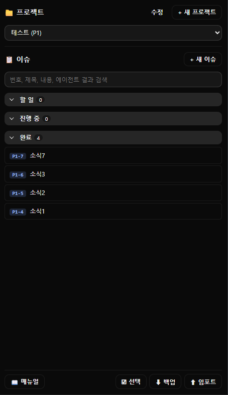
| 영역 | 설명 |
|---|---|
| 📁 프로젝트 | 작업할 프로젝트를 고르는 드롭다운입니다. 오른쪽에 수정, + 새 프로젝트 버튼이 있습니다. |
| 📋 이슈 | + 새 이슈 버튼, 검색 입력란, 그리고 상태별 목록(할 일 / 진행 중 / 완료)이 있습니다. |
| 하단 버튼바 | 왼쪽에 📖 매뉴얼(이 문서를 웹 브라우저로 엽니다), 오른쪽에 ☑ 선택, ⬇ 백업, ⬆ 임포트가 있습니다. |
3. 프로젝트
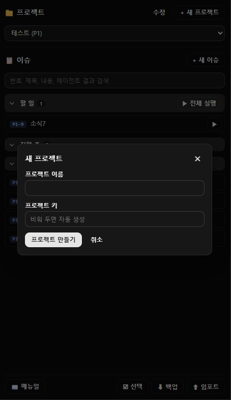
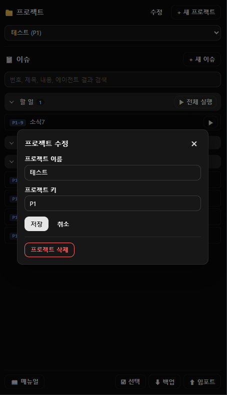
만들기
- + 새 프로젝트를 누릅니다.
- 프로젝트 이름을 입력합니다. (필수)
- 프로젝트 키는 비워 두면 자동으로 만들어집니다. 직접 입력하려면 영문으로 시작하는 영문·숫자 2~5자이고, 다른 프로젝트와 겹치면 안 됩니다. 입력한 키는 대문자로 저장됩니다.
- 프로젝트 만들기를 누릅니다.
키는 이슈 번호의 앞부분이 됩니다. 예를 들어 키가 P1이면 이슈는 P1-1, P1-2…로 번호가 매겨집니다.
수정과 삭제
- 수정에서 이름과 키를 바꿀 수 있습니다. 키를 바꾸면 이슈 번호의 앞부분도 같이 바뀝니다. (
P1-3→NEW-3) - 프로젝트 삭제는 확인 단계를 거치며, 그 프로젝트의 이슈와 결과가 모두 삭제됩니다. 되돌릴 수 없습니다.
4. 이슈 등록
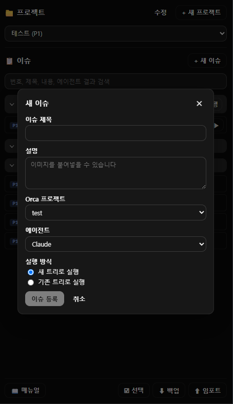
| 항목 | 설명 |
|---|---|
| 이슈 제목 | 필수입니다. 비어 있으면 이슈 등록 버튼이 눌리지 않습니다. |
| 설명 | 에이전트에게 전달될 작업 내용입니다. 이미지를 붙여넣을 수 있습니다(Ctrl+V). 이미지는 [Image #1] 같은 표시로 들어가고, 한 장당 10MB까지 가능합니다. |
| Orca 프로젝트 | 작업을 실행할 Orca의 Git 프로젝트입니다. |
| 에이전트 | Claude, Codex, Antigravity, Cursor, OpenCode 중에서 고릅니다. |
| 실행 방식 | 새 트리로 실행(실행할 때마다 새 작업 트리 생성) 또는 기존 트리로 실행(이미 있는 작업 트리를 골라 사용)입니다. |
등록한 이슈는 할 일에 들어갑니다. Orca 프로젝트, 에이전트, 실행 방식은 이슈에 저장되며, 실행 확인 창에서 실행 방식(새 트리 / 기존 트리와 트리 선택)은 한 번 더 바꿀 수 있습니다.
5. 목록과 검색
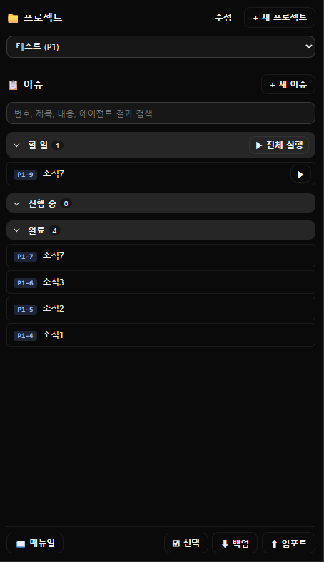
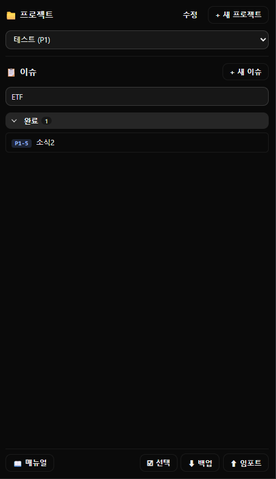
- 이슈는 할 일 / 진행 중 / 완료 그룹으로 나뉘고, 그룹 제목을 눌러 접고 펼 수 있습니다. 펼침 상태는 기억됩니다.
- 각 그룹 안에서는 번호가 큰(최근) 이슈가 위에 옵니다.
- 이슈 행을 누르면 상세 창이 열립니다. 진행 중 이슈는 열 수 없습니다.
검색
이슈 목록 위의 입력란에 입력하면 즉시 걸러집니다. 검색 대상은 다음 네 가지이고, 대소문자를 구분하지 않습니다.
- 이슈 번호 (
P1-4등) - 제목
- 설명
- 에이전트 결과 전문 (완료된 이슈)
검색 중에는 일치하는 이슈가 있는 그룹만 펼쳐서 보여주고, 없으면 "검색 결과가 없습니다."가 표시됩니다. 입력란을 비우면 원래대로 돌아가며, 다른 프로젝트로 바꾸면 검색어가 지워집니다.
6. 작업 실행
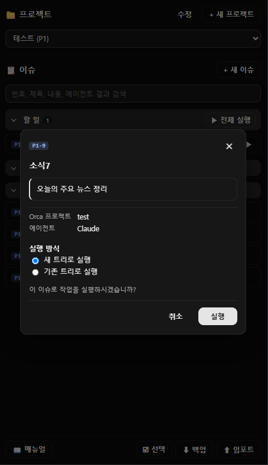
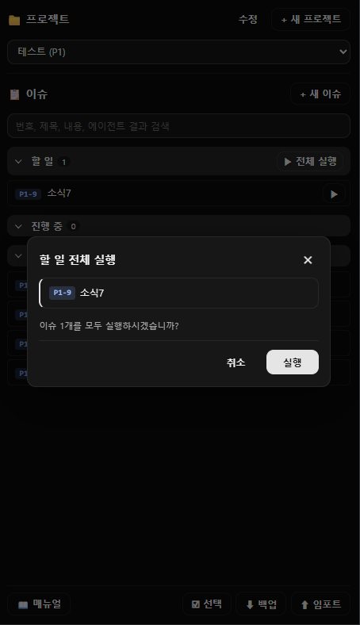
이슈 하나 실행
- 할 일 이슈 오른쪽의 ▶를 누릅니다.
- 확인 창에서 Orca 프로젝트, 에이전트, 실행 방식(새 트리 / 기존 트리)을 확인하고 실행을 누릅니다.
- 이슈가 진행 중으로 바뀌고 에이전트가 시작됩니다.
할 일 전체 실행
할 일 그룹 제목 오른쪽의 ▶ 전체 실행을 누르면, 할 일 이슈 모두를 각자 저장된 설정으로 차례대로 실행합니다. 실패한 이슈가 있으면 패널 상단에 건수와 사유가 표시됩니다.
완료 처리
에이전트가 작업을 끝내면 이슈가 자동으로 완료가 되고, 에이전트의 마지막 답변이 결과로 저장됩니다. 같은 작업 트리에서 이슈가 여러 개 돌고 있으면, 먼저 시작한 이슈부터 하나씩 완료 처리됩니다.
7. 이슈 상세
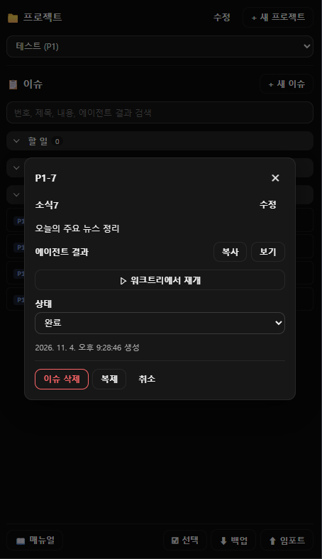
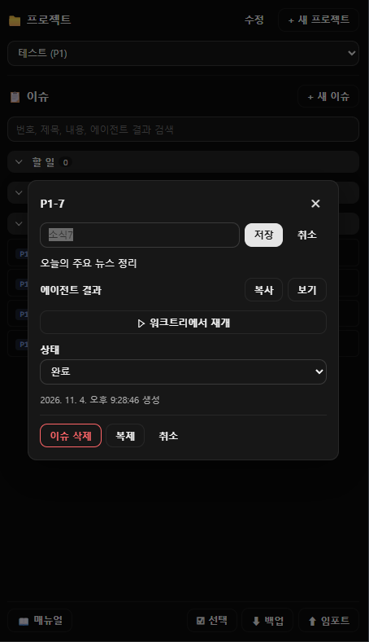
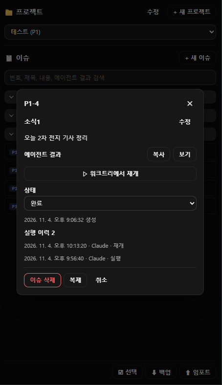
| 기능 | 설명 |
|---|---|
| 에이전트 결과 · 복사 | 이슈 내용과 결과 전문을 새 세션에 붙여 넣기 좋은 문구로 클립보드에 복사합니다. 복사되면 버튼이 잠시 "복사됨"으로 바뀝니다. 토큰은 들지 않습니다. |
| 에이전트 결과 · 보기 | 질문과 답변을 정리한 페이지를 기본 웹 브라우저로 엽니다. 마크다운으로 렌더링됩니다. |
| ▷ 워크트리에서 재개 | 이슈를 진행했던 작업 트리에서 에이전트를 새로 열고, 이슈 내용과 이전 결과(앞 1500자)를 프롬프트로 전달해 이어서 작업합니다. 아래 알아 둘 점을 참고하세요. |
| 상태 | 할 일 / 진행 중 / 완료를 직접 바꿀 수 있습니다. |
| 제목 수정 | 완료된 이슈의 제목 오른쪽 수정을 누르면 입력란이 나옵니다. Enter 또는 저장으로 반영, Esc 또는 취소로 닫습니다. 빈 제목은 저장되지 않습니다. |
| 복제 | 같은 제목, 설명, 이미지, 에이전트, 실행 설정으로 할 일 이슈를 새 번호로 만듭니다. 결과와 실행 이력은 가져가지 않습니다. |
| 실행 이력 | 실행하거나 재개할 때마다 시각, 에이전트, 종류(실행 / 재개)가 기록되고 최신순으로 보입니다. 최근 20건까지 남습니다. |
| 이슈 삭제 | 확인 단계를 거쳐 삭제합니다. 결과도 함께 지워지고, 되돌릴 수 없습니다. |
8. 여러 이슈 한 번에
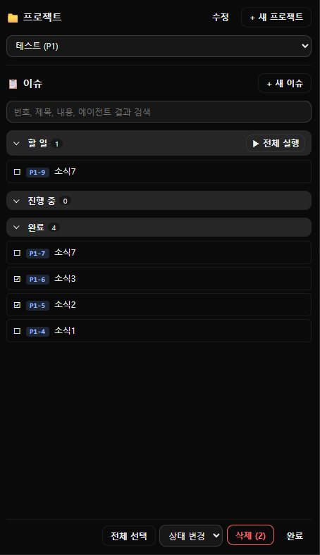
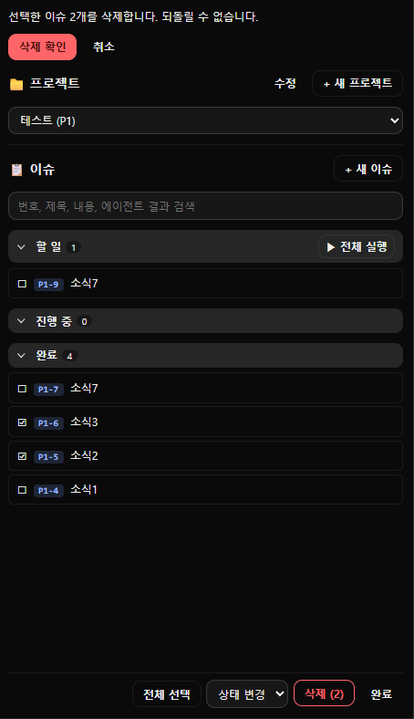
- 하단바의 ☑ 선택을 누르면 선택 모드가 됩니다. 이슈 행을 누를 때마다 ☐/☑가 바뀝니다.
- 하단바가 전체 선택(선택 해제) · 상태 변경 · 삭제 (n) · 완료로 바뀝니다.
- 상태 변경에서 할 일 / 진행 중 / 완료 중 하나를 고르면 선택한 이슈 모두에 적용됩니다.
- 삭제 (n)을 누르면 화면 위쪽에 확인 문구가 나오고, 삭제 확인을 눌러야 지워집니다. 취소로 돌아갈 수 있습니다.
- 끝나면 완료를 눌러 선택 모드를 나갑니다.
진행 중 이슈는 선택할 수 없습니다. 프로젝트를 바꾸면 선택 모드가 해제됩니다.
9. 백업과 복구
⬇ 백업 (내려받기)
하단바의 ⬇ 백업을 누르면 저장 대화상자가 열리고, issues-backup-날짜-시간.json 파일로 저장합니다. 파일에는 모든 프로젝트, 이슈, 에이전트 결과 전문, 실행 이력이 들어 있습니다.
~/.orca-issues/images 폴더에 있습니다.⬆ 임포트 (복구)
- 하단바의 ⬆ 임포트를 누르고 백업 JSON 파일을 선택합니다.
- 화면 위쪽에 "백업에서 프로젝트 n개, 이슈 m개를 복구합니다" 확인 문구가 나옵니다. 이 단계에서는 아무것도 바뀌지 않습니다.
- 복구 확인을 누르면 현재 데이터가 백업 내용으로 통째로 대체됩니다. 취소를 누르면 그대로입니다.
- 복구는 병합이 아니라 대체입니다.
- 복구 직전의 상태는 아래 자동 백업 폴더에 남겨 두므로, 잘못 복구해도 그 파일로 되돌릴 수 있습니다.
- 이 플러그인의 백업이 아닌 파일을 고르면 "가져오기 실패" 오류가 표시되고 현재 데이터는 그대로입니다.
- 예전 버전에서 받은 백업 파일도 그대로 가져올 수 있습니다.
- 프로젝트가 하나도 없는 빈 화면에서도 복구할 수 있습니다.
자동 백업
| 항목 | 내용 |
|---|---|
| 위치 | ~/.orca-issues/backups (Windows: C:\Users\사용자이름\.orca-issues\backups) |
| 시점 | 데이터가 바뀌고 약 5초 뒤에 한 번 (연달아 바뀌면 마지막 한 번만) |
| 파일 이름 | 20261104-133256-auto.json 형식 (시각 + 종류). 복구 직전에는 …-before-restore.json |
| 보관 | 최근 10개만 남기고 오래된 것은 자동 삭제. 직전 백업과 내용이 같으면 새로 만들지 않습니다. |
자동 백업 파일도 ⬆ 임포트로 그대로 복구할 수 있습니다.
10. 데이터와 한도
| 데이터 | 저장 위치 |
|---|---|
| 프로젝트와 이슈 | 플러그인 자체 저장소 (%APPDATA%\orca\plugins-data\…\storage.json) |
| 에이전트 결과 | 같은 저장소의 이슈별 항목 (프로젝트·이슈 목록과 따로 저장) |
| 첨부 이미지 | ~/.orca-issues/images (이슈나 프로젝트를 삭제해도 파일은 남습니다) |
| 자동 백업 | ~/.orca-issues/backups |
| 결과 보기 페이지 | ~/.orca-issues/results |
| 한도 | 값 |
|---|---|
| 에이전트 결과 길이 | 이슈당 최대 80,000자 (넘으면 잘림) |
| 플러그인 저장소 전체 | 약 5MiB (결과가 아주 긴 이슈가 많으면 저장이 거부될 수 있음) |
| 이미지 한 장 | 10MB |
| 실행 이력 | 이슈당 최근 20건 |
11. 알아 둘 점
재개는 "이어서 열기"입니다
Orca 앱의 "워크트리에서 재개"는 이전 대화 세션을 그대로 열지만, 이 플러그인의 ▷ 워크트리에서 재개는 같은 작업 트리에서 에이전트를 새로 열고 이슈 내용과 이전 결과(앞 1500자)를 프롬프트로 전달합니다. 이전 대화 전체가 이어지는 것은 아닙니다. 결과 전문이 필요하면 복사를 쓰세요.
재개와 실행은 토큰을 사용합니다
에이전트를 새로 시작하므로 토큰이 소모됩니다. 복사와 보기, 검색, 백업은 토큰을 쓰지 않습니다.
작업 트리가 사라졌다면
"새 트리로 실행"으로 만든 작업 공간은 나중에 삭제됐을 수 있습니다. 재개할 때 저장된 작업 트리가 없으면 이슈에 지정된 트리, 그것도 없으면 그 프로젝트의 첫 번째 작업 트리에서 대신 엽니다. 프로젝트에 작업 트리가 하나도 없으면 "이 프로젝트에 작업 트리가 없습니다." 오류가 표시됩니다.
오류 메시지
| 메시지 | 원인과 조치 |
|---|---|
| 저장 실패 / 결과 저장 실패 | 저장소 한도(값 크기, 전체 5MiB)를 넘었거나 저장소 오류입니다. 먼저 ⬇ 백업을 받고, 불필요한 이슈를 정리해 주세요. |
| 가져오기 실패: 이 플러그인의 백업 파일이 아닙니다. | 백업 JSON이 아니거나 형식이 다른 파일입니다. 현재 데이터는 바뀌지 않았습니다. |
| 복구 실패 | 복구 중 저장소 오류가 났습니다. 복구 직전 상태가 백업 폴더에 있으니 ⬆ 임포트로 되돌릴 수 있습니다. |
| 재개 실패 | 작업 트리를 찾지 못했거나 에이전트 실행에 실패했습니다. 메시지를 확인하세요. |
| 복사 실패 | OS 클립보드 명령을 실행하지 못했습니다. (Linux는 xclip 설치 필요) |
| 매뉴얼 열기 실패 | 매뉴얼 파일(docs/manual.html)을 플러그인 폴더에서 찾지 못했습니다. |